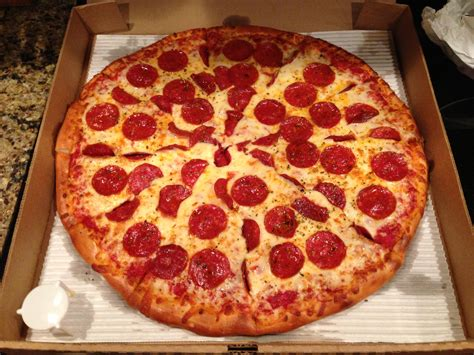

Pizza

About pizza
Pizza is a savory dish made of a flattened wheat bread dough base topped with tomato sauce, cheese (usually mozzarella), and various meats, vegetables, or spices, then baked at a high temperature
Ingredients
- Dough: 2 cups all-purpose flour, 1 packet (2 1/4 teaspoons) active dry yeast, 3/4 cup warm water, 1 teaspoon sugar, 1 teaspoon salt, and 1 tablespoon olive oil.
- Sauce & Toppings: 1/2 cup tomato sauce or pizza sauce, 1 cup shredded mozzarella cheese, 1 tablespoon olive oil, and optional toppings like sliced onions, bell peppers, or mushrooms.
Steps
- Activate the yeast by mixing the warm water, sugar, and yeast in a small bowl. Let it rest for 5 minutes until the top becomes foamy.
- Make the dough by mixing the flour and salt in a large bowl, then pouring in the yeast mixture and olive oil.
- Knead the dough on a clean, floured surface for about 8 to 10 minutes until it feels smooth and stretchy.
- Let the dough rise in a lightly oiled bowl covered with a clean cloth for 1 to 2 hours, or until it doubles in size.
- Preheat your oven to a very hot temperature, around 450°F (230°C). If you have a baking stone, place it inside to heat up.
- Shape the dough by pressing it out with your hands or rolling it with a pin on a floured surface into a flat, round circle.
- Add the toppings by spreading a thin layer of tomato sauce over the dough, scattering the mozzarella cheese evenly, and adding your favorite vegetables or meats.
- Bake the pizza for 12 to 15 minutes until the crust turns golden brown and the cheese bubbles.